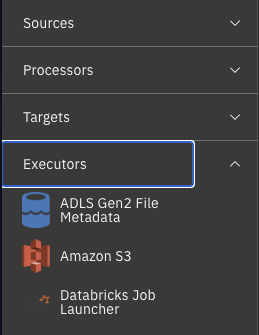
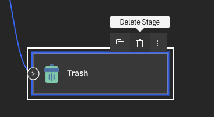
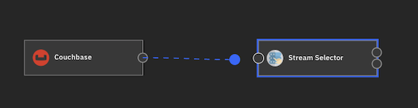
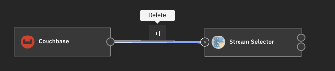

Stages#
A stage is a part of a flow, a stage is responsible for processing the flow’s data in a single simple way. This way we can connect a bunch of stages to create a flow that can do complex tasks.
- The SDK provides many ways to interact between a flow and its stages:
Listing all the stages in a flow
Adding a stage to a flow
Removing a stage from a flow
Connecting stages
Listing all the stages connected to a stage
Disconnecting stages
Editing a stage’s configuration
Listing all Stages in a Flow#
To list all the stages in a flow, you can use the StreamsetsFlow.stages property.
This returns a list of Stage instances.
>>> flow.stages
[DevRawDataSource_01(), Trash_01()]
Add a Stage to a Flow#
To add stages to a flow in the UI, you can open the dropdown menu on the left of the flow edit page and select the stage you want to add.
{kind=link}
In the SDK, you can use the StreamsetsFlow.add_stage() method.
This method accepts the following parameters label, name, type and library, of which one of label or name must be provided.
This method returns an instance of Stage representing the newly created stage.
>>> amazon_sqs_consumer = flow.add_stage(label='Amazon SQS Consumer')
You can use the type parameter to narrow down on the type of stage that is returned when multiple stages share the same label.
For example, Amazon S3 can be of type origin, executor or destination.
The StreamsetsFlow.add_stage() method
returns the first possible stage matching the conditions, therefore it is advisable to narrow down your possibilities by always specifying type.
Note
There are four possible values for type namely, origin, processor, executor and destination.
Remove a Stage from a Flow#
To remove a stage in the UI, you can click on the stage and then click on the delete icon that comes above it.
{kind=link}
In the SDK, you can remove a stage from a flow using the StreamsetsFlow.remove_stage() method
and passing an instance of Stage to it.
All stages connected to this stage will be disconnected by this action.
This method does not return anything.
>>> flow.remove_stage(amazon_sqs_consumer)
Connecting Stages#
In the UI, to connect stages, you can click on the output of a stage and drag it to another stage.
{kind=link}
- In the SDK, to connect stages to each other we can use the following methods:
Stage.connect_output_to()- this method is used to connect the output of the current stage to the input of another stage.Stage.connect_input_to()- this method is used to connect the input of the current stage to the output of another stage.Stage.connect_event_to()- this method is used to connect the event output of the current stage to the input of another stage.
For all the methods listed above, we can pass one or more instances of Stage as parameters to connect the stages.
>>> dev_random_source = flow.add_stage('Dev Raw Data Source') # a sample origin stage that generates random data
>>> trash = flow.add_stage('Trash') # a sample destination stage that accepts all input and discards it
>>> dev_random_source.connect_output_to(trash) # alternatively, you can call: trash.connect_input_to(dev_random_source)
>>> # events are connected in a similar way
>>> pipeline_finisher = flow.add_stage('Pipeline Finisher Executor')
>>> dev_random_source.connect_event_to(pipeline_finisher) # outputs events to pipeline finisher
Connecting Stages with Multiple Outputs#
There is a special case of Stream Selector - a stage having multiple outputs. The number of outputs of this stage are determined by predicates.
It is possible to modify the predicates attribute of a Stream Selector stage, this causes the number of outputs of the stage to differ.
It is then possible to connect the stage to multiple stages, and we can connect each stage to take the output for a specific predicate.
To do this via the SDK, we will first edit the predicates of a Stream Selector stage and then how to connect other stages based on a predicate.
You can view the predicates of a Stream Selector using the StageWithPredicates.predicates property.
>>> stream_selector = flow.add_stage('Stream Selector')
>>> stream_selector.predicates
[{'outputLane': 'StreamSelector_01OutputLane...', 'predicate': 'default'}]
A Stream Selector stage has only a single default predicate by default. We need to add more predicates to suit our needs.
We can do this via the StageWithPredicates.add_predicates() method.
We need to pass a list of str which contains the predicates we want to add.
>>> stream_selector.add_predicates(['${record:value("/expense") >= 10000}', '${record:value("/expense") < -10000}'])
>>> stream_selector.predicates
[{'outputLane': 'StreamSelector_01OutputLane...', 'predicate': '${record:value("/expense") < -10000}'}, {'outputLane': 'StreamSelector_01OutputLane...', 'predicate': '${record:value("/expense") >= 10000}'}, {'outputLane': 'StreamSelector_01OutputLane...', 'predicate': 'default'}]
To remove a predicate we need to pass a predicate into the StageWithPredicates.remove_predicate() method.
>>> stream_selector.remove_predicate(stream_selector.predicates[0])
>>> stream_selector.predicates
[{'outputLane': 'StreamSelector_01OutputLane...', 'predicate': '${record:value("/expense") >= 10000}'}, {'outputLane': 'StreamSelector_01OutputLane...', 'predicate': 'default'}]
Finally, to connect a stage with a specific predicate, use the predicate parameter in the Stage.connect_output_to()
or Stage.connect_input_to() methods.
>>> stream_selector.connect_output_to(trash, predicate=stream_selector.predicates[0])
>>> # alternatively, you can use:
>>> trash.connect_input_to(stream_selector, predicate=stream_selector.predicates[0])
Listing all Stages Connected to a Stage#
There are three ways a stage can be connected to another stage, it can output data to another stage, it can output event data to another stage or it could get input data from a stage.
- There are three properties of a
Stageinstance for each of these types of connections: Stage.inputs- for all the stages that input data into the current stage.Stage.outputs- for all the stages that the current stage outputs to.Stage.events- for all the stages that the current stage outputs its events to.
All three properties return a list of Stage instances.
>>> dev_random_source.outputs
[Trash_02()]
>>> dev_random_source.events
[PipelineFinisherExecutor_01()]
>>> trash.inputs
[DevRawDataSource_02(), StreamSelector_01()]
Disconnecting Stages#
In the UI, to disconnect a stage, you can click on the connection and then the delete icon that comes above it.
{kind=link}
- To disconnect stages, we have a similar trio of methods as for connecting:
Stage.disconnect_output_from()- this method is used to disconnect the output of the current stage from the input of another stage.Stage.disconnect_input_from()- this method is used to disconnect the input of the current stage from the output of another stage.Stage.disconnect_event_from()- this method is used to disconnect the event output of the current stage from the input of another stage.
>>> dev_random_source.disconnect_output_from(trash) # alternatively, you can call: trash.disconnect_input_from(dev_random_source)
>>> dev_random_source.disconnect_event_from(pipeline_finisher)
Editing a Stage’s Configuration#
You can edit a stage’s configuration through the Stage.configuration property.
This property returns a Configuration object which encapsulates a stage’s configuration.
You can print out the configuration and edit it similar to a dict.
>>> dev_random_source.configuration['stop_after_first_batch']
False
>>> dev_random_source.configuration['stop_after_first_batch'] = True